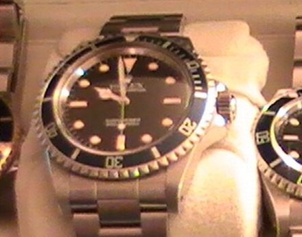

<template id="s6-timeline-template">
  <div data-composition-id="s6-timeline" data-width="1080" data-height="1920">
    <div class="sc">
      <div class="paper"></div>
      <div class="lk18">
        <div class="sat"><span>I was</span></div>
        <div class="hero sans" data-t="19.73">18</div>
      </div>
      <div class="pol" data-drop="20.86"></div>
      <div class="tlw">
        <div class="track">
          <div class="line"></div>
          <div class="tick" style="left:540px"><div class="lab">FIRST WATCH</div><div class="mk"></div><div class="yr">8 YEARS</div></div>
          <div class="tick t18" style="left:1140px"><div class="lab">FIRST ROLEX</div><div class="mk"></div><div class="yr">18 YEARS</div></div>
          <div class="tick ghost" style="left:1740px"><div class="lab">&nbsp;</div><div class="mk"></div><div class="yr">TODAY</div></div>
        </div>
        <div class="dot"></div>
      </div>
      <div class="lkR">
        <div class="sat"><span data-t="20.06">and</span> <span data-t="20.23">I</span> <span data-t="20.29">bought</span> <span data-t="20.58">my</span> <span data-t="20.83">first</span></div>
        <div class="hero serif blue" data-t="21.08">Rolex</div>
      </div>
    </div>
    <style>
      [data-composition-id="s6-timeline"] { position: absolute; inset: 0; overflow: hidden; background: #f2f2f4; font-family: var(--sans); color: var(--ink); }
      [data-composition-id="s6-timeline"] .sc { position: absolute; inset: 0; }
      [data-composition-id="s6-timeline"] .paper { position: absolute; inset: 0; opacity: 0.5; mix-blend-mode: multiply; background-image: url("data:image/svg+xml;utf8,<svg xmlns='http://www.w3.org/2000/svg' width='400' height='400'><filter id='p'><feTurbulence type='fractalNoise' baseFrequency='0.75' numOctaves='3' seed='3'/><feColorMatrix type='matrix' values='0 0 0 0 0.55  0 0 0 0 0.55  0 0 0 0 0.6  0 0 0 0.35 0'/></filter><rect width='100%' height='100%' filter='url(%23p)'/></svg>"); }
      [data-composition-id="s6-timeline"] .sat { font-weight: 500; font-size: 42px; color: #2a2a30; }
      [data-composition-id="s6-timeline"] .sat span { display: inline-block; }
      [data-composition-id="s6-timeline"] .hero.sans { font-weight: 800; font-size: 300px; line-height: 0.9; letter-spacing: -0.05em; }
      [data-composition-id="s6-timeline"] .hero.serif { font-family: var(--serif); font-style: italic; font-weight: 700; font-size: 150px; line-height: 1; }
      [data-composition-id="s6-timeline"] .blue { color: var(--blue); }
      [data-composition-id="s6-timeline"] .lk18 { position: absolute; left: 96px; top: 330px; display: flex; flex-direction: column; align-items: flex-start; }
      [data-composition-id="s6-timeline"] .pol { position: absolute; left: 520px; top: 300px; width: 470px; height: 420px; padding: 16px 16px 58px; background: #fff; transform: rotate(4deg); box-shadow: 0 18px 40px rgba(0,0,0,0.18), 0 2px 6px rgba(0,0,0,0.12); }
      [data-composition-id="s6-timeline"] .pol img { display: block; width: 100%; height: 100%; object-fit: cover; }
      [data-composition-id="s6-timeline"] .tlw { position: absolute; left: 0; top: 900px; width: 1080px; height: 140px; }
      [data-composition-id="s6-timeline"] .track { position: absolute; left: 0; top: 0; width: 2400px; height: 140px; }
      [data-composition-id="s6-timeline"] .line { position: absolute; left: -200px; width: 2400px; top: 58px; height: 2px; background: #b9b9c4; }
      [data-composition-id="s6-timeline"] .tick { position: absolute; top: 0; width: 320px; margin-left: -160px; text-align: center; }
      [data-composition-id="s6-timeline"] .lab { font-size: 26px; font-weight: 700; letter-spacing: 0.14em; height: 34px; color: #2a2a30; }
      [data-composition-id="s6-timeline"] .mk { width: 2px; height: 26px; margin: 6px auto 0; background: #6b6b76; }
      [data-composition-id="s6-timeline"] .yr { font-size: 28px; font-weight: 500; letter-spacing: 0.08em; margin-top: 12px; color: #4a4a55; }
      [data-composition-id="s6-timeline"] .t18 .lab, [data-composition-id="s6-timeline"] .t18 .yr { color: var(--blue); }
      [data-composition-id="s6-timeline"] .ghost { opacity: 0.35; }
      [data-composition-id="s6-timeline"] .dot { position: absolute; left: 540px; top: 59px; width: 24px; height: 24px; margin: -12px 0 0 -12px; border-radius: 50%; background: var(--blue); box-shadow: 0 0 0 5px #f2f2f4, 0 0 22px rgba(31,79,216,0.55); }
      [data-composition-id="s6-timeline"] .lkR { position: absolute; left: 96px; top: 1130px; display: flex; flex-direction: column; align-items: flex-start; }
    </style>
    <script src="https://cdn.jsdelivr.net/npm/gsap@3.15.0/dist/gsap.min.js"></script>
    <script>
      window.__timelines = window.__timelines || {};
      (function () {
        const T0 = 19.55, r = '[data-composition-id="s6-timeline"] ';
        const root = document.querySelector('[data-composition-id="s6-timeline"]');
        const tl = gsap.timeline({ paused: true });
        tl.from(r + ".sc", { scale: 1.06, filter: "blur(8px)", duration: 0.35, ease: "expo.out" }, 0);
        tl.from(r + ".lk18 .sat", { opacity: 0, y: 12, duration: 0.25, ease: "power2.out" }, 0.05);
        // timeline slides 8 -> 18 while the marker holds centre
        tl.to(r + ".track", { x: -600, duration: 0.75, ease: "power3.inOut" }, 0.12);
        tl.fromTo(r + ".dot", { scale: 1 }, { scale: 1.35, duration: 0.18, yoyo: true, repeat: 1, ease: "power1.inOut" }, 0.86);
        root.querySelectorAll("[data-t]").forEach((el) => {
          const t = Math.max(0.05, +el.dataset.t - T0 - 0.04);
          if (el.classList.contains("hero")) tl.from(el, { opacity: 0, scale: 0.94, filter: "blur(6px)", duration: 0.4, ease: "expo.out" }, t);
          else tl.from(el, { opacity: 0, y: 14, duration: 0.25, ease: "power2.out" }, t);
        });
        tl.from(r + ".pol", { y: -90, rotation: 18, opacity: 0, duration: 0.5, ease: "back.out(1.4)" }, 20.86 - T0);
        tl.set({}, {}, 1.8);
        window.__timelines["s6-timeline"] = tl;
      })();
    </script>
  </div>
</template>
